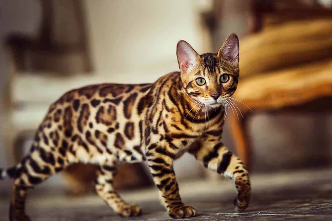
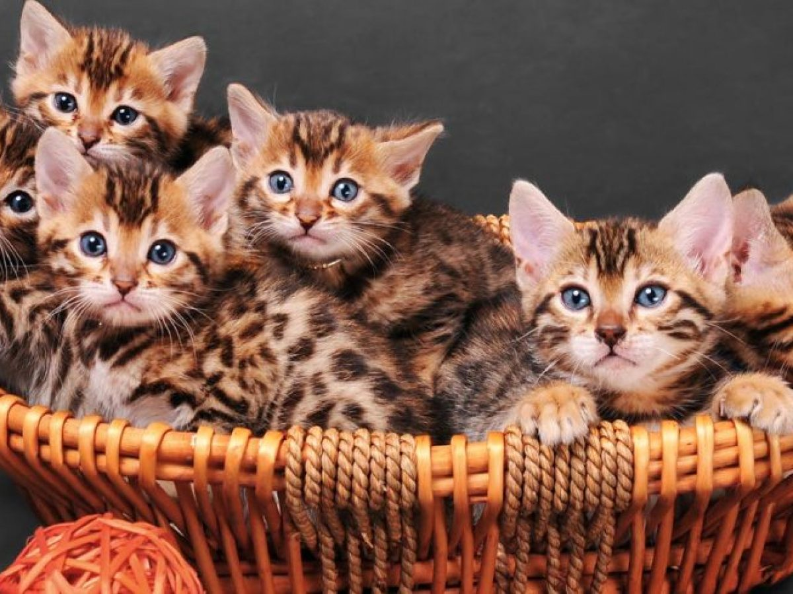

En este artículo encontrarás información sobre los gatos Bengala, una raza muy interesante y particular.
El gato bengala es una raza exótica conocida por su apariencia salvaje y elegante, que recuerda a un leopardo en miniatura. Este gato se destaca por su pelaje corto y sedoso, decorado con manchas o patrones marmoleados en tonos marrones, dorados o plateados. Además de su belleza, los bengala son muy activos, juguetones y curiosos, lo que los convierte en compañeros ideales para familias que disfrutan de un estilo de vida dinámico. Son inteligentes, afectuosos y les encanta interactuar con sus dueños, así como trepar y explorar. A pesar de su apariencia salvaje, los bengala son gatos domésticos amigables y leales.
El origen del gato bengala se remonta a la década de 1960, cuando la criadora Jean Mill comenzó a cruzar gatos domésticos con leopardos asiáticos, pequeños felinos salvajes de Asia, con el objetivo de crear una raza que combinara la belleza de los gatos salvajes con el temperamento amigable e los gatos domésticos. A través de un cuidadoso proceso de cría selectiva, el gato bengala fue reconocido oficialmente como raza en los años 80 y desde entonces ha ganado popularidad por su apariencia exótica y su personalidad vibrante.
En cuanto a los cuidados, los gatos bengala necesitan una dieta equilibrada y rica en proteínas de alta calidad, ya que son muy activos y atléticos. Disfrutan de tener espacio para trepar y explorar, por lo que se recomienda proporcionarles rascadores altos y juguetes interactivos que los mantengan estimulados. Son gatos sociales y necesitan tiempo de juego y atención diaria para mantenerse felices. Además, su pelaje corto requiere un cepillado ocasional, aunque tienden a ser muy limpios por sí mismos. Los bengala también se benefician de visitas regulares al veterinario para mantener una salud óptima y asegurar un estilo de vida adecuado.